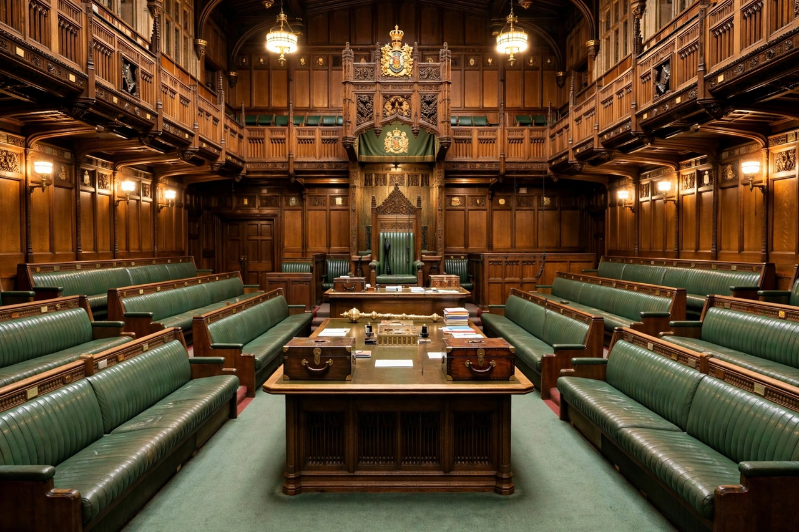

From Wikipedia, the free encyclopedia
| House of Commons | |
 The House of Commons chamber in the Palace of Westminster | |
| Type | Lower house of the Parliament of the United Kingdom |
| Leadership | Speaker; Prime Minister; Leader of the Opposition |
| Seats | 650 |
| Voting system | First-past-the-post |
| Meeting place | House of Commons chamber, Palace of Westminster, London |
The House of Commons is the lower house of the Parliament of the United Kingdom. Like the upper house, the House of Lords, it meets in the Palace of Westminster in London, England. The House of Commons is an elected body consisting of 650 members known as members of Parliament (MPs). MPs are elected to represent constituencies by the first-past-the-post system and hold their seats until Parliament is dissolved.
The House of Commons of England began to evolve in the 13th and 14th centuries. In 1707 it became the House of Commons of Great Britain after the political union between England and Scotland, and from 1801 it was also the House of Commons for Ireland after the political union of Great Britain and Ireland. In 1922 the body became the House of Commons of the United Kingdom of Great Britain and Northern Ireland.
Under the Parliament Acts 1911 and 1949, the power of the Lords to reject legislation was reduced to a delaying power. The government is solely responsible to the House of Commons, and the prime minister stays in office only as long as they retain its confidence. Although the Commons does not formally elect the prime minister, by convention the prime minister is answerable to it and must maintain its support.
Parliament developed from the councils that advised medieval English kings. In 1258 the Provisions of Oxford established a council of fifteen barons; Simon de Montfort's parliament of 1265 included representatives of the boroughs, and the "Model Parliament" of 1295 under Edward I included knights and burgesses alongside clergy and nobility. By the reign of Edward III the Commons sat separately from the Lords. The Commons' power grew over the following centuries: by the early 17th century clashes over taxation contributed to the English Civil War. After the Glorious Revolution of 1688, the Bill of Rights 1689 established that taxation and legislation required parliamentary consent.
During the 19th century the Commons was reformed by the Reform Acts (1832, 1867 and 1884), which extended the franchise and regularised constituencies. Women gained the vote in 1918 (on equal terms in 1928). The Parliament Act 1911 removed the Lords' veto over money bills and limited their veto over other bills, confirming the Commons as the dominant chamber.
Since the 2023 boundary review, the Commons has 650 constituencies, each electing one MP by first-past-the-post. To stand, a candidate must be at least 18 years old and a British, Irish or qualifying Commonwealth citizen. General elections must be held at least every five years; since the repeal of the Fixed-term Parliaments Act 2011 by the Dissolution and Calling of Parliament Act 2022, elections are again called by the monarch on the advice of the prime minister. MPs receive a salary and are expected to attend debates, vote, sit on committees and handle constituents' casework.
The Commons is presided over by the Speaker, who is elected by MPs, maintains order and is expected to be politically impartial. The chamber is rectangular, with government benches on one side and opposition benches on the other, separated — by tradition — by a distance of two sword lengths. Debates are governed by standing orders and by the precedents collected in Erskine May. Legislation passes through first and second readings, committee stage, report stage and third reading in both Houses before receiving royal assent. Question periods, including Prime Minister's Questions on Wednesdays, allow MPs to scrutinise ministers.
Much detailed work is done in committees. Select committees, aligned with government departments, examine policy, spending and administration; the Liaison Committee questions the prime minister. Public bill committees scrutinise legislation line by line. The Backbench Business Committee allocates time for debates chosen by backbenchers.